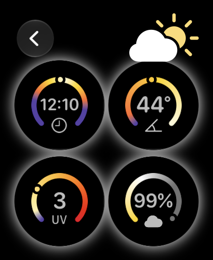
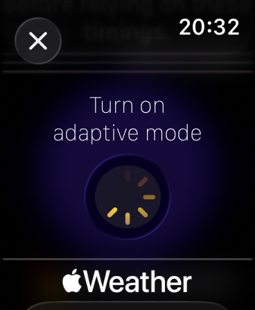

The model
What the timer is
actually made of
The short version lives on the overview. This is the long version: every input, what the app does with it, and what it leaves out.
1. Where the sun is
Sunscreen starts with astronomy, because it's free. From latitude, longitude and the time, it computes the sun's elevation above the horizon — declination, equation of time, hour angle, all of it arithmetic done in UTC with a longitude offset, which sidesteps time zones and daylight saving entirely.
This isn't how it gets the UV. The forecast already has UV, with ozone, cloud and angle baked in. Elevation answers a different question: how much of the light behind that number is the kind that ages skin. UVI 2 at 4pm in July and UVI 2 at noon in November are the same number carrying different amounts of the wavelength that ages you, and elevation is the only thing on hand that can tell them apart.
It buys two other things worth having on a watch: it works with no network at all, and it needs no permission. If you haven't granted Location, the app uses the principal city of your time zone instead — a few tenths of a degree of elevation error, which doesn't matter that much — so the astronomy runs from the first launch either way.
2. What the sky is doing
Once a morning, Sunscreen pulls the day's hourly forecast — UV index and cloud cover for all 24 hours — and caches it. One network request per day, no repeated wake-ups, and the rest of the day runs from the cache.
Forecast UV arrives as a whole number, which has no resolution left at the bottom of its range: below UVI 2 the difference between 0.4 and 1.4 has been rounded away, and those differ by a factor of three. So at low values the app leans on its own clear-sky model attenuated by cloud instead, and at higher values it takes the forecast, capped against what the sun's angle physically permits. A stale cache can't produce an impossible number.
clear-sky UVI ≈ 10 · sin(elevation)2.4
For Bucharest at 44.4°N that gives about 8.5 at summer-solstice noon (elevation ~69°) and about 1 at winter noon (elevation ~22°) — close enough to carry the estimate when the watch has no signal.

3. What your face receives
Ambient UV is not facial UV. Two corrections turn one into the other, and they're independent, so they compound:
- Geometry. Fitted to headform dosimetry — median facial dose as a fraction of horizontal ambient, 26% with the sun high, 39% mid-band, 48% with the sun low1. The share nearly doubles as the sun drops, because low light strikes a near-vertical face square on while overhead light lands on your scalp.
- Spectrum. UVB is filtered out of the atmosphere far faster than UVA as the sun drops, so the aging share of what arrives climbs as the index falls23. The correction follows that curve; the exponent is a judgment call, and treated as one.
Together they produce a load rate: aging-weighted dose per hour of outdoor time, on your face specifically. At high summer sun the combined multiplier sits below one — a vertical face genuinely receives less than the ground does — and it climbs to a capped four as the sun drops, so no combination of bad inputs can run away with the timer.
4. What you've actually spent
Rate is only half of it. Your watch already records Time in Daylight — the minutes your watch saw real daylight — outside, or beside a bright window — not the minutes you had the app open — and Sunscreen reads that, and only that, from Health. Multiply those minutes by the rate and you have the daylight dose — the UV that actually reached you — one of the two things that run the clock down. This is what the app calls adaptive mode: grant Health and Location access and the timer follows your actual daylight and local UV. Decline, and it still runs — from your time zone, assuming you're mostly indoors.

5. The clock, and what runs it down
Every application starts a clock, and the clock runs down in two ways at once.
Time. The film degrades on its own — sebum, face-touching, rubbing, UVA through window glass. With no sun at all it is spent after fourteen hours. It doesn't degrade evenly, either: the measurements below put over half of a day's loss in the first two hours, flattening after that. So the model uses the measured shape — loss rising as roughly t0.4 — rather than a straight line.
Dose. UV that gets through the film accumulates damage. Twelve load units of face-received, photoaging-weighted UV spend the budget on their own.
(t / 14 h)0.4 + dose / 12 = 1 → reapply
The two add up rather than compete, because they wear down the same film. If they were separate alarms — whichever went off first — a day that used a third of the time and a third of the dose would trigger neither, even though two-thirds of the protection is gone.
Two things follow. Someone who stays in all day is asked again after fourteen hours — for a morning application that lands after dark, so the app waits for the next morning instead: one application a day. And a day in open sun runs the dose down every hour and a half or so, which means more applications — deliberately, because those are exactly the days when swimming and sweat take the film off anyway.
The time term is also where the unobservable things live. Towels, face-touching, rubbing, sebum, UVA through glass — none of it can be seen from a wrist, and all of it steadily degrades the film rather than arriving as events you could detect. So it isn't modelled as events. It is the fourteen-hour curve, and that curve is what all of it looks like from outside.
Why fourteen hours, and not two
The two-hour rule entered US labelling guidance in 20074, and measurement since has not supported it. Tag a properly applied film with a fluorescent marker and photograph it across a working day: indoor workers were down about 16% at two hours and 28% by the eighth5, and the same method on outdoor workers gave 18% and 32%6 — a similar curve under very different sun. Add half an hour of exercise and eighty minutes in water, and SPF still fell only 15–40% over eight hours7.
Two things fall out of that. The loss front-loads and then flattens — over half of a full day's degradation has already happened by hour two. Taking the two indoor-worker points literally, 28.2 ÷ 16.3 = 1.73 = 4p gives p ≈ 0.4: loss grows as roughly t0.4, and that is the curve the model uses. And the figures cluster near 30% over eight hours across sedentary and outdoor work alike, which is a long way from being completely unprotected after two.
The studies disagree on what to conclude. The indoor-worker authors decided reapplication may be unnecessary; the outdoor-worker authors concluded it is essential, and that past four hours what remains may not be enough. Both follow from their own data, and the gap between them is the reason to measure rather than count: what matters isn't hours elapsed, it's how much sun actually landed on you.
Sweat is the one variable that genuinely compresses the window. Spectroscopy puts an SPF 50 film at full strength for six hours at rest, but only about two on an active wearer, sliding toward SPF 30 by the sixth hour8. Sunscreen has no workout or swim detection, so a runner and a desk worker look the same to it. The mitigation is that the days producing the most prompts — beach, hiking, a day's outdoor work — are exactly the days when sweat and water take the film off anyway. Heavy dose is a fair proxy for removal even though the removal itself is invisible.
The fourteen-hour ceiling extrapolates 1.75× past the measured eight. That is a real stretch, but it only binds for someone receiving almost no dose — anyone with meaningful exposure is brought in by the dose term long before — so the downside is small, and the upside is that a low-exposure day produces one application rather than two.
None of this is a relaxation of the advice — it is a correction toward the evidence. The trial that actually demonstrated sunscreen prevents photoaging tested daily application, not frequent reapplication9.
And all of it assumes you put enough on to begin with. Under-application dominates every other term here: in that durability trial, halving the dose from 2 to 1 mg/cm² took an SPF 70 product from an SPF above 64 at eight hours down to 26. No amount of modelling compensates for that.
6. Knowing when not to ask
A depletion model tells you when protection has run down. It does not tell you when it's reasonable to interrupt someone, and those are different questions. The intervention with trial evidence behind it is applying every day, and an app that nags on ordinary days costs the adherence that makes that happen. So the model is generous on time and strict on dose: an indoor day gets one prompt, an office day one or two, and only a day genuinely spent in the sun gets more.
Before any prompt, the app asks a second question: how much dose could the rest of today still deliver if you stayed out until dark? Under about 15% of the budget, it stays quiet — reapplying for the last hour of weak sun isn't worth the interruption. Because that cutoff comes from the sun rather than the clock, it moves with the season: late afternoon in summer, early afternoon in December. It is also why a fourteen-hour clock started in the morning never fires at ten at night — it lands past the cutoff and rolls to the next morning.
The first prompt of the day comes from the sun too. It fires when the sun first climbs past about 13° of elevation — high enough for the dose to be worth blocking — which lands earlier in summer and later in winter without anyone setting a time, and never before seven or after eleven. Where 13° is never reached, as in a Copenhagen December, the target scales down to 60% of that day's peak, so the prompt still arrives, just later. And it's gated the same way as everything else: if the whole day can't deliver even 5% of the budget, there's no morning prompt at all. Anything that would land at night is delivered silently, or moved to the next morning.
If you miss it, there is one more nudge. When daylight minutes start accumulating and nothing has been logged today, you've walked out unprotected — the one moment worth interrupting. It isn't repeated.
7. What it deliberately doesn't model
A model that claims more than it knows is worse than a coarse one, so Sunscreen leaves several obvious-looking things out on purpose:
- Your skin type. Fitzpatrick classification predicts how fast you burn. This is a photoaging model, and it doesn't ask.
- Your SPF number. SPF is measured at 2 mg/cm² in a lab. Almost nobody applies that much, so the number on the bottle isn't the protection on your face, and multiplying by it would only add false precision.
- Sunburn risk. Sunscreen does not predict burning and shouldn't be used to. It's a different pathway with a different weighting.
- Swimming, sweat and towelling. Real, and invisible from a wrist, so they aren't asked about. The time curve absorbs the everyday kind; the heavy kind happens on exactly the days the dose term is already producing the most prompts.
Notes and sources
The measurements above come from published work rather than from us. Every figure traces to one of these.
- Downs N, Parisi A. Measurements of the anatomical distribution of erythemal ultraviolet: a study comparing exposure distribution to the site incidence of solar keratoses, basal cell carcinoma and squamous cell carcinoma. Photochem Photobiol Sci. 2009;8(8):1195–1201. doi.org/10.1039/b901741k · See also their Three dimensional visualisation of human facial exposure to solar ultraviolet, Photochem Photobiol Sci. 2007;6(1):90–98, doi.org/10.1039/b607553c
- Kollias N, Ruvolo E, Sayre RM. The value of the ratio of UVA to UVB in sunlight. Photochem Photobiol. 2011;87(6):1474–1475. doi.org/10.1111/j.1751-1097.2011.00980.x · PubMed
- Sola Y, Lorente J. Contribution of UVA irradiance to the erythema and photoaging effects in solar and sunbed exposures. J Photochem Photobiol B. 2015;143:5–11. doi.org/10.1016/j.jphotobiol.2014.10.024
- US Food and Drug Administration. Sunscreen Drug Products for Over-the-Counter Human Use; Proposed Amendment of Final Monograph. Federal Register 72:49070, 27 August 2007. federalregister.gov
- Rungananchai C, Silpa-Archa N, Wongpraparut C, Suiwongsa B, Sangveraphunsiri V, Manuskiatti W. Sunscreen application to the face persists beyond 2 hours in indoor workers: an open-label trial. J Dermatolog Treat. 2019;30(5):483–486. doi.org/10.1080/09546634.2018.1530440 · PubMed
- Kobwanthanakun W, Silpa-archa N, Wongpraparut C, Pruksaekanan C, Manuskiatti W. An evaluation of the course of facial sunscreen coverage and sustainability over an 8-hour workday among outdoor workers. Health Sci Rep. 2021;4(3):e350. doi.org/10.1002/hsr2.350 · PubMed
- Ouyang H, Meyer K, Maitra P, Daly S, Svoboda RM, Farberg AS, Rigel DS. Realistic Sunscreen Durability: A Randomized, Double-blinded, Controlled Clinical Study. J Drugs Dermatol. 2018;17(1):116–117. PubMed
- Ruvolo E, Aeschliman L, Cole C. Evaluation of sunscreen efficacy over time and re-application using hybrid diffuse reflectance spectroscopy. Photodermatol Photoimmunol Photomed. 2020;36(3):192–199. doi.org/10.1111/phpp.12535 · PubMed
- Hughes MC, Williams GM, Baker P, Green AC. Sunscreen and prevention of skin aging: a randomized trial. Ann Intern Med. 2013;158(11):781–790. doi.org/10.7326/0003-4819-158-11-201306040-00002 · PubMed
Sunscreen is a general wellbeing tool, not a medical device. It estimates a modelled UV dose from forecast and sensor data — it doesn't measure your skin, and it can't diagnose, treat or prevent any condition. Keep following the guidance on your bottle and from your doctor or dermatologist.